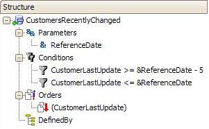
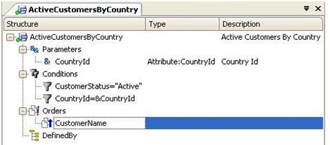
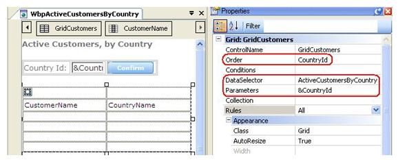
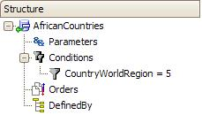
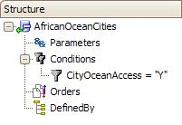
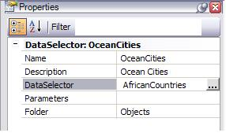

In this article you will find examples which show different uses of Data Selectors. Example 1:A Data Selector named CustomersRecentlyChanged was defined as follows:  As you can see, it receives a date by parameter, and contains 2 filters and 1 unconditional order defined. The period associated with "customers recently changed" can change many times. Therefore, the objective of defining this Data Selector is to encapsulate the definition, so that if the period needs to be changed, it will be enough to do so in the Data Selector definition. The CustomersRecentlyChanged Data Selector can be invoked, for example, in this code:
For each USING CustomersRecentlyChanged( &Today)
...
EndFor
The corresponding navigation will show the following:
For each
Order (CustomerLastUpdate)
Where CustomerLastUpdate >= &Today - 5; // 5 days before reference date
Where CustomerLastUpdate <= &Today
...
EndFor
Example 2:A Data Selector named ActiveCustomersByCountry was defined as follows:  As you can see, it receives a &CountryId variable by parameter, and contains 2 filters and 1 unconditional order defined. Then, a web panel that contains one grid references the above Data Selector in its grid property: Data Selector  Thus, the objective is to combine the Data Selector definition with the grid query. The idea is that the end user, at runtime, enters a country in the &CountryId variable present in the fixed area of the web panel; all active customers that belong to that entered country will be shown in the grid. Example 3 (not implemented yet):In the following example, we want to list all African countries that have access to the ocean. We have defined two Data Selectors (one Data Selector that filters African countries, and another Data Selector that filters countries with access to the ocean), because we need to reference them from different queries or calculations:   As in this specific example we need to retrieve countries that fulfill both conditions, we can solve this requirement by nesting Data Selectors. This means that in the AfricanOceanCities Data Selector we can set its Data Selector property = name of the second Data Selector (AfricanCountries) or vice versa:  The code that references the AfricanOceanCities Data Selector may be, for example: For each using AfricanOceanCities() Print AfricanOceanCities EndFor The resulting navigation will show the following: For each where CountryWorldRegion = 5 where CityOceanAccess = "Y" Print AfricanOceanCities Endfor In this example, if you want to display the data in a grid, enter the AfricanOceanCities Data Selector name in the DataSelector grid property.
|